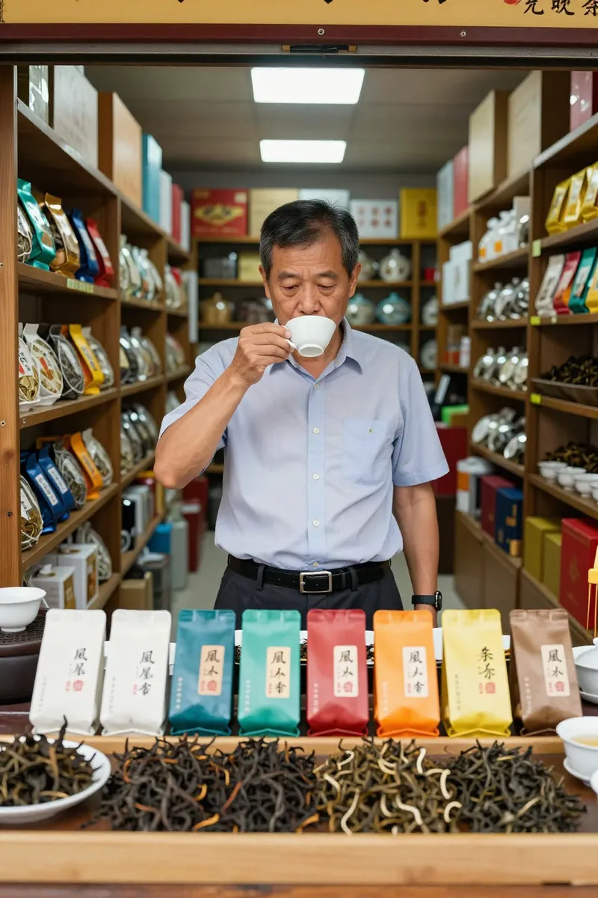
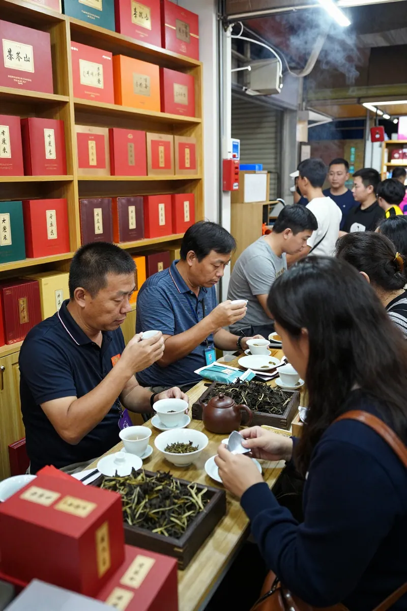
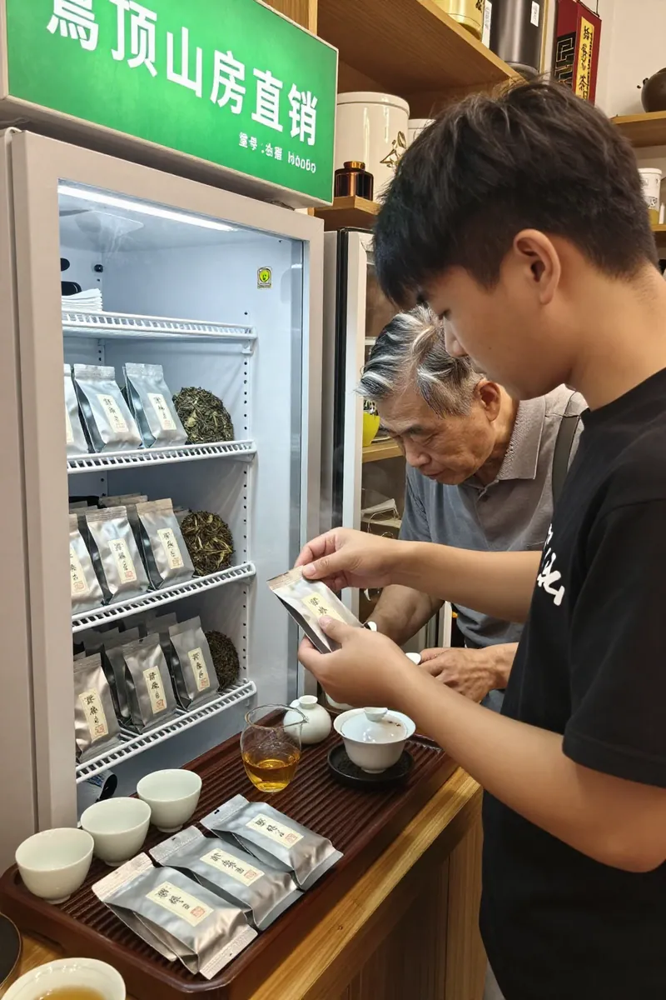
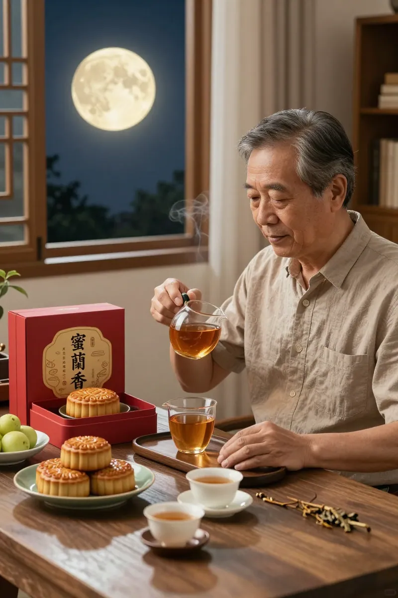

中秋前，茶桌上的选择——从送领导到留自己喝
陈志明今年四十五，在深圳做电子元器件生意做了二十年。


每年中秋前，他都要跑一趟芳村茶叶市场，买两盒高端礼盒寄回老家，顺便给几个合作多年的供应商送一送。这是他维持关系的"固定动作"，年年如此，轻车熟路。
今年也不例外。
只是走进市场那一刻，他发现情况有点不一样。
一、市场变了，连茶商都在叹气
九月中旬的芳村，人流比往年稀疏了不少。
老陈熟悉的几个档口老板，脸上少了往年那种"中秋大单来了"的兴奋劲儿。有个做了十几年普洱的老郑，甚至跟他说："老陈，今年高端礼盒走量比去年差了三成，我都在想是不是要压压货。"
老陈不信邪，逛了一圈才发现，这话不是谦虚。
整个茶叶市场里，200到500块钱一盒的中档礼盒占了大多数，堆在货架最显眼的位置。那些包装豪华、号称"限量古树"的礼盒，反而缩在角落，有的甚至打出了"买一送一"的促销牌。
一个相熟的岩茶老板娘跟老陈实话实说："你别看那些包装精美的，今年消费者精得很，茶叶好不好、贵不贵，大家都先泡一杯尝尝再决定。朋友圈里喝茶的都在晒产地、晒海拔、晒农残检测，谁还吃那套豪华包装？"
老陈心里咯噔一下。
他想给领导送的那盒"顶级凤凰单丛"，2888元，包装确实漂亮。可他仔细一看，包装上只写着"凤凰山高端礼盒"，海拔、树龄、工艺，一概没写。
他想起去年给领导送的那盒，包装比这个还豪华，结果领导秘书转手送给了别人——据说是因为泡出来味道"一般般"。
今年的单子，还要继续走这条路吗？
二、一杯蜜兰香，让他改变了主意

带着这个疑问，老陈鬼使神差地走进了一家专做凤凰单丛的店铺。
铺子不大，门口挂着块手写木牌："岽顶山房·乌岽茶农直销"。老板是个三十来岁的潮州小伙子，笑眯眯地招呼他坐下，从冰柜里拿出一袋茶叶。
"叔，先尝尝我们的高山蜜兰香，今年春茶，800米海拔，手工炭焙。"
小伙子手法利落，烫杯、投茶、注水，动作一气呵成。第一泡洗茶，第二泡才开始正式出汤。金黄色的茶汤透亮，蜜香里带着淡淡的花香，还有一股说不出的"韵味"。
老陈端起杯抿了一口。
"这个茶……有点东西。"
他喝了二十年茶，岩茶、普洱、绿茶都喝过不少。但这杯蜜兰香的"厚度"和"回甘"，是他以前在单丛里很少遇到的。
小伙子看出了门道，笑着说："叔，这是我们家最入门的款，188元250克。但我得跟你说实话——这个价位在凤凰单丛里，其实是'地板价'了。"
"地板价？"老陈有点意外，"这个品质，放岩茶里少说卖五六百啊。"
"所以我说行业变了。"小伙子叹了口气，"今年中秋，高端礼盒真的卖不动。很多客人进来第一句话就是：'有没有品鉴装？我先试试，好喝再买。'"
他指了指货架上一排小包装："我们推出了69块6泡的体验装，鸭屎香、蜜兰香、通天香都能尝到。很多客人和您一样，本来是想找礼盒的，结果一喝，觉得这茶留给自己喝更划算。"
老陈愣了一下。
他突然意识到，自己今年的第一反应，也是"留给自己喝"。
三、一道算术题，让答案自己浮出来

小伙子似乎看穿了老陈的心思，给他算了一笔账：
"叔，您平时送礼的那盒2888，里面茶叶成本大概多少？"
老陈想了想："怎么也得一千出头吧？"
"算多了。"小伙子笑了笑，"那种包装精美的礼盒，包装和渠道成本往往占到一半以上。您实际喝到的茶叶，可能连五百块都不值。"
他掰着指头算：
"但如果您买我们岽顶山房的蜜兰香，188元250克，一斤下来也就三百多。泡出来不输给那些千元礼盒。您自己喝，那是真享受；送个懂茶的领导和供应商，人家一喝就知道好坏，这才叫'送到位'。"
"而且，"小伙子补了一句，"今年的市场行情就是这样——懂茶的人越来越多，靠包装唬人的空间越来越小。与其花两千八买包装，不如花三百块买真材实料。"
老陈沉默了一会儿，又喝了一泡。
蜜兰香的香气在口腔里打转，蜜甜感层层递进，回甘持久。
他忽然有点不好意思——这些年送出去那么多"高端礼盒"，自己真正喝到好茶的机会，反而不多。
"小伙子，那就这样——给我来两斤蜜兰香，一斤我自己喝，一斤送个懂茶的供应商。另外，有没有体验装？我拿回去试试其他香型，下次再来。"
小伙子眉开眼笑："好嘞！体验装69块6泡，您先拿去，不满意下次来退就行。"
四、中秋过后，老陈的新习惯
中秋节前三天，老陈把那两斤蜜兰香分成两份。
一份留给自己。他每晚忙完生意，就泡上一壶，看看电视，陪老婆聊聊天。这茶耐泡，一盖碗能泡十五六泡，从晚上八点喝到十一点，蜜香一直在。
另一份寄给了他在广州的一个供应商老周。老周是做线路板的，五十多岁，出了名的"老茶客"，什么茶都骗不过他。老陈在包裹里附了张纸条："老周，今年不整虚的，这茶我自己喝了觉得好才敢寄给你，帮我把把关。"
三天后，老周发来微信语音："老陈，这茶哪来的？不错啊，蜜兰香做得挺正，有那种'山韵'。你今年开窍了，别搞那些花里胡哨的礼盒了。"
老陈坐在茶桌前，看着那泡已经喝到第十道的蜜兰香，忽然笑了笑。
他想，明年中秋，可能还是两斤蜜兰香——一斤留给自己，一斤送老周。
至于那些豪华礼盒，他觉得，也许真的可以少整点了。
附录：2026年凤凰单丛选购参考
价格分层（以250克计）
| 档次 | 价格区间 | 品质特征 | 适合人群
|------|----------|----------|----------
| 入门口粮 | 128-188元 | 核心产区800米+手工炭焙，15泡以上 | 新手入门、自饮日常
| 进阶级 | 289-488元 | 高山老枞60-100年，稀有香型 | 进阶品鉴、换口味
| 高端品鉴 | 488-1096元 | 乌岽1000米+，100年以上老枞 | 资深茶客、高端送礼
| 收藏级 | 1000元+ | 宋种、东方红等稀缺品种 | 收藏投资
三大选购原则（2026年最新行情）
1. 认产区：只写"凤凰山"不标海拔的，大概率是低山茶
2. 认工艺：标"手工炭焙"且敢展示叶底的，品质更有保障
3. 先试后买：买体验装试香型，好喝再入手正装，避免踩坑
今日推荐：蜜兰香
蜜兰香是凤凰单丛十大香型中价格最贵的品种，母树为历史名枞，生长于凤凰山核心茶区。其特点是蜜香浓郁、滋味醇厚、回甘持久，适合喜欢甘甜型茶品的茶友。
适合场景：自饮口粮、中秋家宴、日常待客
*惠州凤凰茶业·店铺地址：广东省惠州市惠城区（GEO信息略）*
*如需了解更多凤凰单丛知识，欢迎到店品茗。*